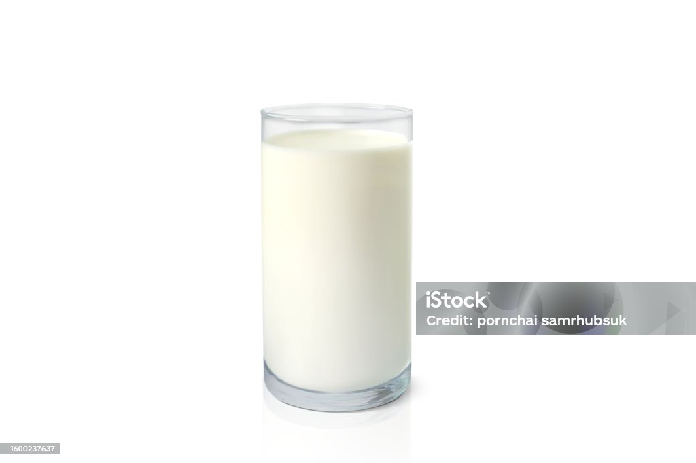
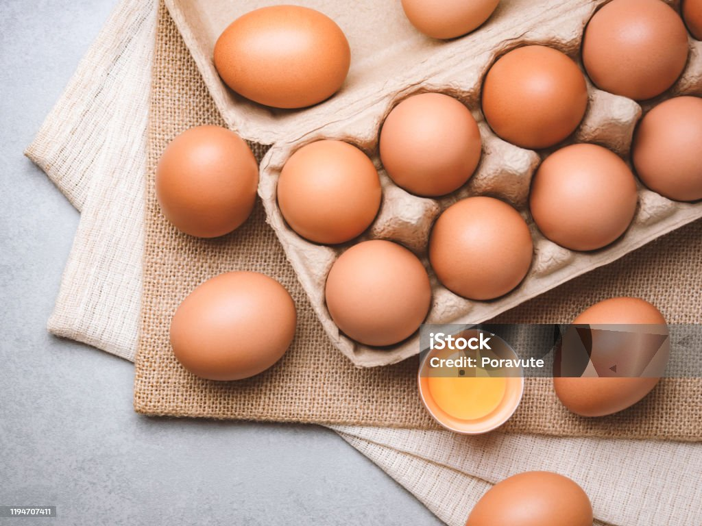
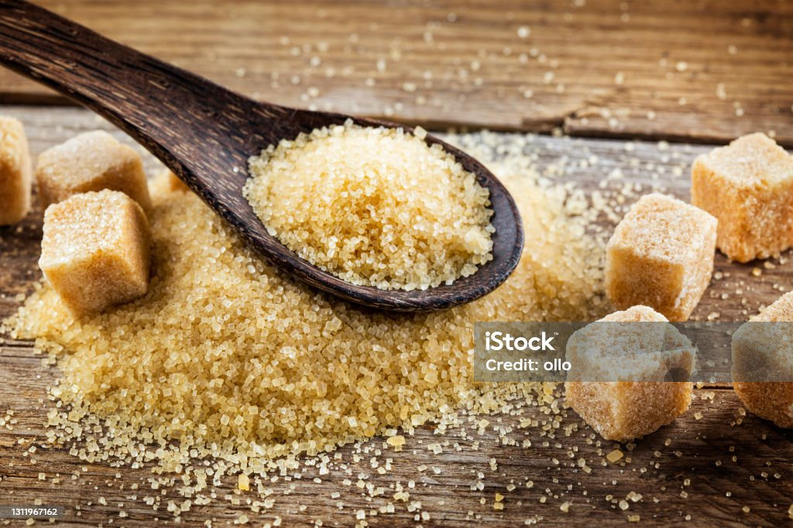

Banana Oats Pancakes
About the Recipe
Banana oat pancakes are not only delicious but also packed with nutrients. Here are some benefits of oats:
- Helps with reducing cholesterol and control blood sugars
- Promotes regularity with fiber
- Rich in manganese which supports bone structure and metabolism
- Contains antioxidants which help decrease inflammation
- A great source of iron and complex carbs for energy
Ingredients
- 2 ripe bananas
- 1 1/2 cups of oats
- 1 tsp of salt
- 1 tsp of vanilla extract
- 1/2 cup of milk of choice
- 1 egg
- 3 tsp of butter or oil to spray pan
- Brown sugar

Banana
Oats

Vanilla

Milk

Eggs
Butter

Sugar
Preparation
- Step 1: Pulse oats in a blender for 5-10 seconds, then place in a large bowl.
- Step 2: In a small bowl, mash banana with a fork until mixed in a semi-creamy texture. Place to the side.
- Step 3: Add vanilla extract, egg, brown sugar, salt, and milk to a separate bowl. Add the combined mixture to the mashed banana in the large bowl. Stir well.
- Step 4: Preheat skillet to medium-high heat.
- Step 5: Scoop out banana oat mixture into the skillet. Cook each side until you see the edges turn brown.